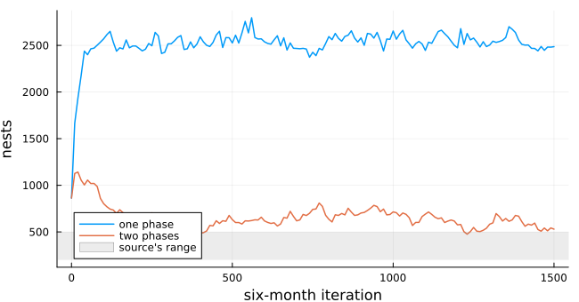
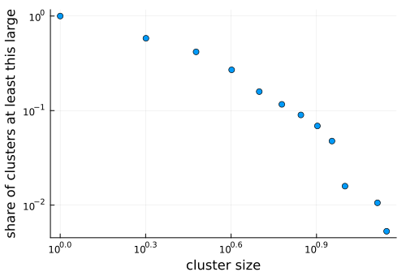
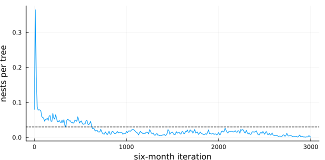
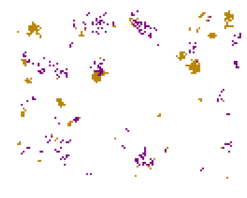

Ant nests and a fungus on a coffee farm
Simon Frost
Overview
On an organic coffee farm in Mexico, the ant Azteca instabilis nests in shade trees and tends scale insects, which the fungus Lecanicillium lecanii attacks. The fungus also attacks the coffee rust and the green coffee scale, so the ants’ spatial pattern matters for pest control. Vandermeer et al. (2008) showed that a simple automaton of nests reproduces the clustered pattern seen in a 45 ha census. New nests appear next to old ones, and phorid flies kill nests where they are dense. Jackson et al. (2009) replaced the flies with the fungus, which spreads between neighbouring nests and kills them. This model is an adaptation. The sources leave the order of updates open, and that order turns out to decide the density of nests.
ENV["GKSwstype"] = "100"
using EcologicalCellularAutomata
using CellularAutomataCore
using Plots
using StatisticsThe model
The farm is a 90 × 120 torus of shade trees. A tree is empty (0), holds a nest whose scale insects are free of the fungus (1), or holds one whose scale insects are infected (2). A step is six months. With N occupied and F infected Moore neighbours:
- an empty tree next to a nest gains a satellite nest with probability
0.0035 + 0.035 N; - an uninfected nest is infected with probability
0.63 F, or0.007from the soil if no neighbour is infected; - an infected nest dies with probability 0.35.
model = build(:coffee_ant_fungus)CAModel coffee_ant_fungus
Jackson et al. (2009) Azteca nests and Lecanicillium, mortality fungus, two phase(s)
states:
tree::Int8 = 0 ∈ 0:2 # 0 empty, 1 nest, 2 nest with infected scale insects
parameters:
s0 = 0.0035 # satellite expansion intercept
s1 = 0.035 # satellite expansion per occupied neighbour
v = 0.35 # death probability of an infected nest
t0 = 0.0 # transmission intercept
t1 = 0.63 # transmission per infected neighbour
a = 0.007 # background infection probability
m0 = 0.116 # phorid mortality intercept (:phorid)
m1 = 0.036 # phorid mortality per occupied neighbour (:phorid)
rule: LocalRule(<anonymous function>, Moore(1))The base model of Vandermeer et al. (2008) has no fungus. A nest dies with probability 0.116 + 0.036 N, as phorid flies find dense clusters of nests.
Colonisation first, then death
Each iteration of the sources draws colonisation for every empty tree and death for every nest. They do not say whether a nest founded in the iteration counts as a neighbour when deaths are drawn. Here are the base model’s nests over time, with both phases drawn from the same state (one phase) and with deaths drawn after colonisation (two phases):
function nests(; mortality, phases, iterations=1500, seed=1)
sol = solve(problem(:coffee_ant_fungus; mortality, phases, iterations, seed);
saveat=phases === :two ? 20 : 10)
return ant_iterations(sol.t; phases), [count(!=(0), u) for u in sol.u], sol.u
end
t1, n1, _ = nests(; mortality=:phorid, phases=:one)
t2, n2, base = nests(; mortality=:phorid, phases=:two)
plot(t1, n1; label="one phase", lw=1.5, xlabel="six-month iteration", ylabel="nests",
size=(650, 340))
plot!(t2, n2; label="two phases", lw=1.5)
hspan!([200, 500]; alpha=0.15, color=:gray, label="source's range")
Drawn from the same state, the population settles near 2500 nests, five times the 200 to 500 that Vandermeer et al. (2008) reports. When deaths count the new nests, it settles about a hundred above that range. The two-phase reading is much closer and is the default. Its spatial pattern is clumped. The mean/variance ratio of nests in 3 × 3 squares is well below 1, the value for nests placed at random:
late = base[end-50:end]
(nests=round(mean(count(!=(0), u) for u in late)),
mean_variance=round(mean(filter(!isnan, mean_variance_ratio.(late))); digits=2))(nests = 604.0, mean_variance = 0.54)The source reports ratios of 0.4 to 0.5, a little below this one. The cluster sizes of the base model fall off roughly as a power law, which Vandermeer et al. (2008) read as robust criticality:
sizes = cluster_sizes(base[end], !=(0); space=Torus(90, 120), neighbourhood=Moore(1))
s = sort(unique(sizes))
ccdf = [count(>=(x), sizes) / length(sizes) for x in s]
scatter(s, ccdf; xscale=:log10, yscale=:log10, legend=false, xlabel="cluster size",
ylabel="share of clusters at least this large", size=(500, 340))
The fungus
With the fungus in place of the flies, at the parameters fitted by Jackson et al. (2009), both readings again differ:
tf, nf, fungus = nests(; mortality=:fungus, phases=:two, iterations=3000)
plot(tf, nf ./ 10_800; lw=1.2, legend=false, xlabel="six-month iteration",
ylabel="nests per tree", size=(650, 320))
hline!([0.03]; ls=:dash, color=:black)
late = fungus[end-100:end]
d = [count(!=(0), u) / 10_800 for u in late]
m = filter(!isnan, mean_variance_ratio.(late))
(density=round(mean(d); digits=3), range=round.(extrema(d); digits=3),
mean_variance=round(mean(m); digits=2), infected_share=round(mean(count(==(2), u) / max(1, count(!=(0), u))
for u in late); digits=2))(density = 0.01, range = (0.001, 0.026), mean_variance = 0.33, infected_share = 0.55)The field census gives 0.03 nests per tree (dashed) and a ratio of 0.42. Jackson et al. (2009)’s Figure 7 shows the density wandering between about 0.005 and 0.065 for 20 000 iterations, and the ratio between 0.25 and 0.55. With two phases the model’s density stays near 0.05 for some 600 iterations and then falls to about 0.015. Over the last stretch it averages 0.01 and drifts down, with the ratio inside the source’s range. At the fitted parameters this reading of the model lies close to the extinction of the ants, below the field density. With one phase, as before, there are several times too many nests:
_, nf1, one = nests(; mortality=:fungus, phases=:one, iterations=1500)
round(mean(count(!=(0), u) for u in one[end-50:end]) / 10_800; digits=3)0.219A snapshot of the two-phase model at iteration 500, while nests are still common: clusters of nests, many of them carrying the fungus, separated by empty trees.
heatmap(fungus[findfirst(==(500), tf)]; c=[:white, :darkgoldenrod, :purple], clims=(0, 2),
colorbar=false, aspect_ratio=:equal, framestyle=:none, size=(500, 400))
Nests with healthy scale insects are gold and infected ones purple.
Deviations from the source
foreach(d -> println("- ", d), model_info(:coffee_ant_fungus).deviations)- The source's iteration draws colonisation for empty trees and mortality for nests but does not say in which order; by default an iteration is two steps, colonisation then infection and mortality counting the new nests, which brings the densities close to the source's (phases = :one applies both to the same state and gives several times more nests).
- Within a step the source updates 'cell by cell' without saying how; the default is synchronous, and RandomSequential() gives an in-place sweep in random order.
- Initial conditions are not stated; nests are placed at random with density 0.08, all uninfected.
- The quadrat size for the mean/variance ratio is not stated for the model; it is 3 x 3 trees (about 20 m), the scale the base model's authors matched to the Moore neighbourhood.
- An infection probability t0 + t1 F above 1 is clipped to 1; the source does not say.
- New nests start uninfected; the source does not say.Jackson, Doug, John H. Vandermeer, and Ivette Perfecto. 2009. “Spatial and Temporal Dynamics of a Fungal Pathogen Promote Pattern Formation in a Tropical Agroecosystem.” The Open Ecology Journal 2: 62–73. https://doi.org/10.2174/1874213000902010062.
Vandermeer, John, Ivette Perfecto, and Stacy M. Philpott. 2008. “Clusters of Ant Colonies and Robust Criticality in a Tropical Agroecosystem.” Nature 451: 457–59. https://doi.org/10.1038/nature06477.